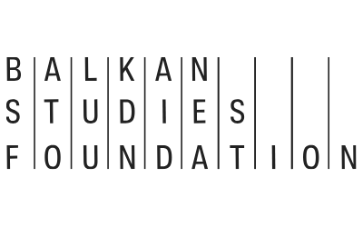
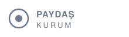
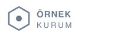
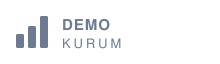
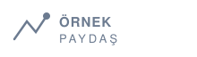
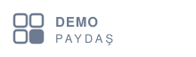

Dijital Sürdürülebilirlik
Dijital dönüşüm süreçlerinde sürdürülebilir çözümler üretmek ana odağımızdır.
DESİL; yapay zekâ, dijital içerik, sürdürülebilirlik ve toplumsal fayda ekseninde projeler, yayınlar ve iş birlikleri geliştiren yeni nesil bir sivil toplum platformudur.
DESİL, dijital dönüşümün etik, kapsayıcı ve sürdürülebilir biçimde ilerlemesini hedefleyen bir sivil toplum kuruluşudur.
“Teknolojinin sunduğu fırsatları değerlendirirken, aynı zamanda ekosistem üzerindeki etkileri dikkate alarak sorumlu, değer odaklı ve etik dijital dönüşüm modelleri geliştirmek.”
Kuruluş Amacı
Dijital dönüşümü sürdürülebilir kılan; etik, kültürel ve toplumsal ekseni birbirine bağlayan dört ana alanda üretiyoruz.
Dijital dönüşüm süreçlerinde sürdürülebilir çözümler üretmek ana odağımızdır.
Teknolojinin fırsatlarını, ekosistem üzerindeki etkileri dikkate alarak sorumlu ve etik biçimde değerlendiririz.
Kültürel değerleri ve dijital içeriği, teknolojiyle geleceğe taşıyacak biçimde üretir ve paylaşırız.
Etki ölçümüyle çalışmalarımıza yön verir, toplumsal faydayı ölçeklendiririz.
Yapay zekâ çağında sürdürülebilirlik, etik teknoloji ve toplumsal fayda için fikirler, notlar ve etki göstergeleri.
Öne çıkan başlıkların ve etki göstergelerinin kısa bir taraması.
Yapay zekânın sürdürülebilirliğe ve topluma etkisine dair perspektifler.
Dijital sürdürülebilirlik üzerine kısa notlar ve okuma önerileri.
Çalışmaları veriyle okuma ve etkiyi görünür kılma denemeleri.
Farkındalıktan kültürel mirasa; toplumsal faydayı dijital ve sürdürülebilir çözümlerle büyüten çalışmalar.
Ortaokul ve lise öğrencilerine yönelik önleyici ve bilinçlendirici bir eğitim projesidir.
Detaylı İnceleTarihi dokuya uyumlu, estetik ve sürdürülebilir bir bilgilendirme çözümü sunar.
Detaylı İnceleAnadolu'nun kaybolma riski taşıyan sözlü kültür geleneklerini dijital ortamda belgeleyen ve gelecek kuşaklara aktaran bir belgesel–arşiv projesidir.
Detaylı İnceleTürkiye ile Osmanlı mirasını paylaşan ülkeler arasında kültürel değerleri dijital teknolojiler ve yapay zekâ ile geleceğe aktaran bir gençlik girişimidir.
Detaylı İnceleİş birlikleri, protokoller ve kurumsal gelişmelerden son haberler.
Bağışınız, aidatınız ya da kurumsal desteğiniz; sürdürülebilir dijital dönüşüm projelerini birlikte büyütür.
Bağış ve destek süreçlerinde kişisel verileriniz KVKK kapsamında korunur.





